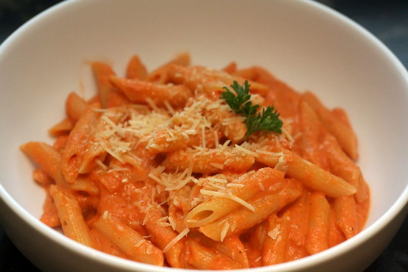

Best 30-minute
Penne alla Vodka Recipe
For 6 people
In the mood for a good Italian meal?
Concerned about getting takeout?
Learn this quick and delicious Penne alla Vodka recipe!
Before you know it, it'll be melting in your mouth!

Front page pasta photo created by flickr
All other photos taken by Marcello Carelli